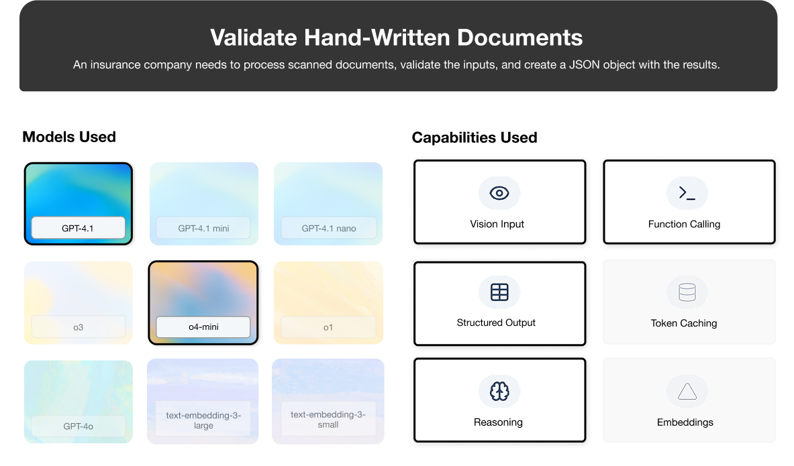
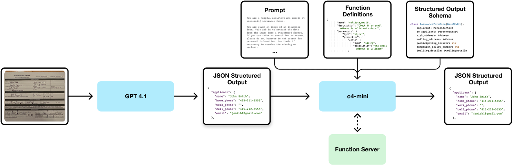
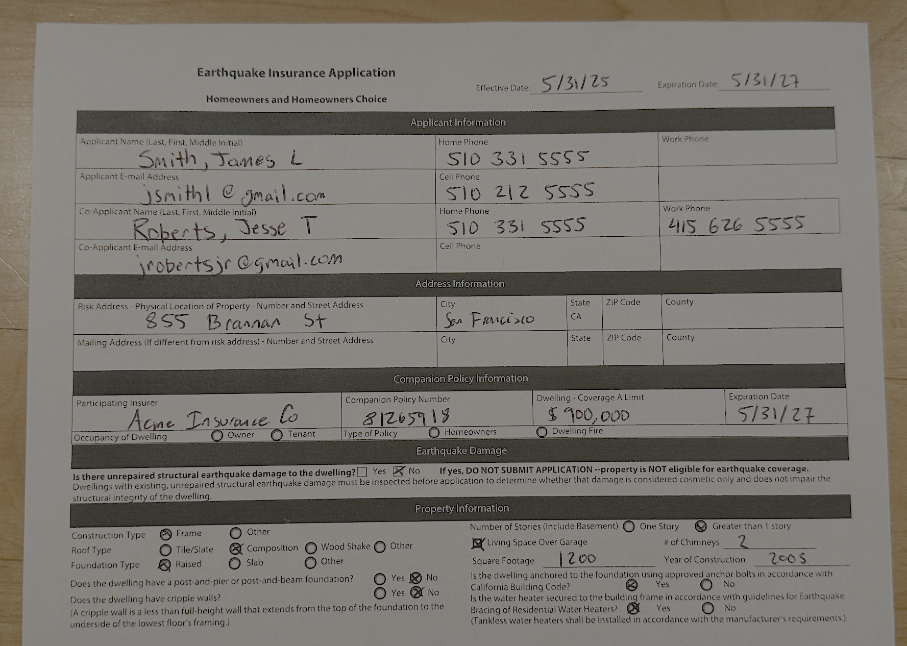

Use Case: Insurance Claim Processing#

Many businesses are faced with the task of digitizing hand-filled forms. In this section, we will demonstrate how OpenAI can be used to digitize and validate a hand-filled insurance form. While this is a common problem for insurance, the same techniques can be applied to a variety of other industries and forms, for example tax forms, invoices, and more.
🗂️ TL;DR Matrix#
This table summarizes the core technology choices and their rationale for this specific OCR implementation targeting the insurance use case.
Layer |
Choice |
Utility |
|---|---|---|
JSON Output |
Structured output with Pydantic |
Easy to specify formatting, adheres to schema better than JSON mode |
OCR and Vision |
gpt-4.1 |
Powerful OCR and vision capabilities, structured output |
Reasoning |
o4-mini |
Affordable but capable reasoning, function calling available |
Form Validation |
Custom function calling |
Can provide interaction with custom or internal databases |
Note: Prices and model identifiers accurate as of April 2025, subject to change.
1. Scenario Snapshot#
Users: The target users are insurance servicing and ops teams who need to ingest data from handwritten forms.
Typical Asks: Each form will have a different required structure, as well as different fields that need to be extracted.
Constraints:
Accuracy: High accuracy is required to ensure that the data is correct and complete.
Uncertainty: The system must handle uncertainty in the data, such as missing data, ambiguous data, and different formats of the same field. In the event that the model cannot resolve the uncertainty, the system requires a mechanism to request human review.
Performance & Cost: While system latency is not critical, high accuracy is required while keeping costs under control. We will aim for a cost target of $20 or less per 1000 pages processed.
2. Architecture#
The high level basic architecture of the solution is shown below.

This task is complex and requires a wide variety of model capabilities, including vision, function calling, reasoning, and structured output. While o3 is capable of doing all of these at once, we found during experimentation that o4-mini alone was not sufficient to achieve the necessary performance. Due to the higher relative costs of o3, we instead opted for a two-stage approach.
Stage one is performed using the vision capabilities of GPT 4.1. This stage is optimized to extract text with maximum accuracy, leaving uncertainty for the reasoning stage and not making any assumptions not visible on the page. By doing OCR in the first stage, we do not require the reasoning model to work directly from an image, which can be challenging given all the other tasks the reasoning model must perform.
Stage two takes advantage of the reasoning abilities of o4-mini. We use o4-mini to validate the accuracy of the OCR and to extract the data into a structured format. Importantly, we expect o4-mini to act as the secondary quality gate – if the OCR is incomplete at this stage we can use o4-mini to refine and validate the original results.
To demonstrate concretely how this works, let’s look at a sample image of an insurance form.

While the form itself is fairly straightforward, there is missing data and ambiguous information that will be difficult for a traditional OCR system to fill out correctly. First, notice that the zip code and county have been omitted. Second, the email address of the user is ambiguous – it could be jsmith1@gmail.com or jsmithl@gmail.com. In the following sections, we will walk through how a well-designed solution can handle these ambiguities and return the correct form results.
Environment Setup & Library Code#
To make our example code more clear, we have broken out environment setup (such as pip install commands) and library functions into a separate code block. This will make it easier to focus on only the relevant logic in each step of our solution.
# Install Python requirements
%pip install -qU pydantic "openai>=1.76.0"
# All imports
import os
import json
from pydantic import BaseModel
# Create the OpenAI client
from openai import OpenAI
client = OpenAI(api_key=os.environ.get("OPENAI_API_KEY", "sk-dummykey"))
Note: you may need to restart the kernel to use updated packages.
def run_conversation_loop(
client,
messages,
tools,
tool_handlers,
response_format,
model,
):
"""Run the OpenAI response completion loop, handling function calls via tool_handlers until parsing final response."""
summaries = []
while True:
print(
f"Requesting completion from model '{model}' (messages={len(messages)})"
)
response = client.responses.parse(
model=model,
input=messages,
tools=tools,
text_format=response_format,
reasoning={"summary": "auto"},
)
summaries.append(response.output[0].summary)
if not response.output_parsed:
print("Assistant requested tool calls, resolving ...")
reasoning_msg, tool_call = response.output
messages.append(reasoning_msg)
messages.append({
"id": tool_call.id,
"call_id": tool_call.call_id,
"type": tool_call.type,
"name": tool_call.name,
"arguments": tool_call.arguments,
})
if tool_call.name in tool_handlers:
try:
args = json.loads(tool_call.arguments)
except Exception as exc:
print(
"Failed to parse %s arguments: %s", tool_call.name, exc
)
args = {}
result = tool_handlers[tool_call.name](**args)
messages.append(
{
"type": "function_call_output",
"call_id": tool_call.call_id,
"output": str(result),
}
)
print(f"Tool call {tool_call.name} complete, result: {str(result)}")
else:
print("Unhandled function call: %s", tool_call.name)
if response.output_parsed is not None:
print("Received parsed result from model")
return response, summaries
Flow Explanation: Stage 1#
Image: The image of the form taken from the user’s smartphone is passed to the model. OpenAI’s models can accept a variety of image formats, but we typically use a PNG format to keep the text crisp and reduce artifacts. For this example, we pass the image to the model from a publicly available content URL. In a production environment, you likely would pass the image as a signed URL to an image hosted in your own cloud storage bucket.
Structured Output Schema: We define a Pydantic model that sets the structure of the output data. The model includes all of the fields that we need to extract from the form, along with the appropriate types for each field. Our model is broken into several subcomponents, each of which is a Pydantic model itself and referenced by the parent model.
class PersonContact(BaseModel):
name: str
home_phone: str
work_phone: str
cell_phone: str
email: str
class Address(BaseModel):
street: str
city: str
state: str
zip: str
county: str
class DwellingDetails(BaseModel):
coverage_a_limit: str
companion_policy_expiration_date: str
occupancy_of_dwelling: str
type_of_policy: str
unrepaired_structural_damage: bool
construction_type: str
roof_type: str
foundation_type: str
has_post_and_pier_or_post_and_beam_foundation: bool
cripple_walls: bool
number_of_stories: str
living_space_over_garage: bool
number_of_chimneys: str
square_footage: str
year_of_construction: str
anchored_to_foundation: bool
water_heater_secured: bool
class InsuranceFormData(BaseModel):
applicant: PersonContact
co_applicant: PersonContact
risk_address: Address
mailing_address_if_different_than_risk_address: Address
participating_insurer: str
companion_policy_number: str
dwelling_details: DwellingDetails
effective_date: str
expiration_date: str
Run OCR: Using the vision capabilities of GPT-4.1, we run the first stage of our pipeline to extract the text from the document in a structured format. This initial stage aims to achieve high accuracy while passing through uncertainty to the second stage. Our prompt explicitly instructs the model to avoid inferring inputs and instead to fill out the details as exact as possible.
OCR_PROMPT = """You are a helpful assistant who excels at processing insurance forms.
You will be given an image of a hand-filled insurance form. Your job is to OCR the data into the given structured format.
Fill out the fields as exactly as possible. If a written character could possibly be ambiguous (i.e. l or 1, o or 0), include all possiblities in the field separated by "OR", especially for email addresses.
"""
user_content = [
{"type": "input_text", "text": "Here is a photo of the form filled out by the user:"},
{
"type": "input_image",
"image_url": "https://drive.usercontent.google.com/download?id=1-tZ526AW3mX1qthvgi8spaaxxeqFG5_6",
"detail": "auto",
},
]
messages = [
{"role": "system", "content": OCR_PROMPT},
{"role": "user", "content": user_content},
]
response = client.responses.parse(
model="gpt-4.1-2025-04-14",
input=messages,
text_format=InsuranceFormData,
# Set temp to 0 for reproducibility
temperature=0,
)
s1_json_results = json.dumps(json.loads(response.output_parsed.model_dump_json()), indent=2)
print(s1_json_results)
Output:
{
"applicant": {
"name": "Smith, James L",
"home_phone": "510 331 5555",
"work_phone": "",
"cell_phone": "510 212 5555",
"email": "jsmithl@gmail.com"
},
"co_applicant": {
"name": "Roberts, Jesse T",
"home_phone": "510 331 5555",
"work_phone": "415 626 5555",
"cell_phone": "",
"email": "jrobertsjr@gmail.com"
},
"risk_address": {
"street": "855 Brannan St",
"city": "San Francisco",
"state": "CA",
"zip": "94107",
"county": "San Francisco"
},
"mailing_address_if_different_than_risk_address": {
"street": "855 Brannan St",
"city": "San Francisco",
"state": "CA",
"zip": "94107",
"county": "San Francisco"
},
"participating_insurer": "Acme Insurance Co",
"companion_policy_number": "81265919",
"dwelling_details": {
"coverage_a_limit": "$900,000",
"companion_policy_expiration_date": "5/31/27",
"occupancy_of_dwelling": "Owner",
"type_of_policy": "Homeowners",
"unrepaired_structural_damage": false,
"construction_type": "Frame",
"roof_type": "Composition",
"foundation_type": "Raised",
"has_post_and_pier_or_post_and_beam_foundation": false,
"cripple_walls": false,
"number_of_stories": "Greater than 1 story",
"living_space_over_garage": true,
"number_of_chimneys": "2",
"square_footage": "1200",
"year_of_construction": "2005",
"anchored_to_foundation": true,
"water_heater_secured": true
},
"effective_date": "5/31/25",
"expiration_date": "5/31/27"
}
You can see that the email address has been refined to a single value, the zip code and county have been filled in, and the mailing address has been filled in by using the risk address. The model has also returned the results in a structured format (with appropriate types such as boolean for yes/no questions), which can be easily parsed by a downstream system.
To help us understand and debug the model, we can also print the summary chain-of-thought reasoning produced by the model. This can help expose common failure modes, points where the model is unclear, or incorrect upstream details.
While developing this solution, the chain-of-thought summaries exposed some incorrectly named and typed schema values.
for summary in summaries:
for response in summary:
print(response.text + '\n')
Output:
**Determining insurance form details**
I have a JSON representation of a partially filled insurance form, and there are a few missing or ambiguous fields that I need to address.
For the email address, I see two options. I can validate which one is correct by checking both with the tool.
The risk address fields for zip code and county are empty. Based on the address "855 Brannan St, San Francisco, CA," I can determine the correct zip code is 94107, as that area corresponds to South Beach. Lastly, since the mailing address is empty, I assume it's the same as the risk address.
**Filling insurance form details**
I think it's best to set the mailing address to be the same as the risk address or clarify that a blank one implies the same. Since it's an explicit instruction to fill missing fields, I'll fill in the mailing address with the risk address to avoid confusion.
All co-applicant fields are present, and dwelling details are complete. The effective and expiration dates are also provided. I plan to validate both email options by checking each one separately. Let's begin with validating the first email.
3. Model and Capabilities Playbook#
Selecting the right tool for the job is key to getting the best results. In general, it’s a good idea to start with the simplest solution that fits your needs and then upgrade if you need more capabilities.
Task |
Start With |
Upgrade When… |
Escalate To |
Rationale |
|---|---|---|---|---|
OCR |
gpt-4.1 |
Complex forms that are difficult to understand at a glance |
o3 |
gpt-4.1 is fast and cost-effective for most OCR. o-3 has the ability to reason about form structure. |
Results Refinement |
o4-mini |
Complex logic for inferring details, many function calls required. |
o3 |
Better for very long chains of reasoning, especially with both function calls and structured output. |
4. Evaluation Metrics#
Track key metrics to ensure the system is performing accurately and as expected.
Critical Metrics
OCR Accuracy: Per-character and per-word accuracy.
Inferred Field Rate: Portion unfilled entries correctly inferred from either existing data or function calling.
Human Intervention Rate: How often a document contains an UNKNOWN and must be referred to a human.
We recommend building a labeled hold-out set of forms and their expected responses. This dataset should be representative of the expected deployment environment, see the OpenAI evals guide for more detailed information on building and evaluating your system.
5. Deployment Notes#
Moving from prototype to a production-ready system requires attention to operational details (LLMOps).
Cost Breakdown#
We will assume that for document ingestion, batch pricing is a viable option due to high latency tolerance (i.e. overnight runs are fine).
Stage 1: OCR (Optical Character Recognition)#
Model: gpt-4.1
Type |
Tokens |
Rate (per 1M) |
Cost |
|---|---|---|---|
Input |
2,000 |
$1.00 |
$0.002 |
Output |
1,500 |
$4.00 |
$0.006 |
Total for 1,000 pages (Stage 1) |
$8.00 |
Stage 2: Reasoning#
Model: o4-mini
Type |
Tokens |
Rate (per 1M) |
Cost |
|---|---|---|---|
Input |
2,000 |
$0.55 |
$0.0011 |
Output |
3,000 |
$2.20 |
$0.0066 |
Total for 1,000 pages (Stage 2) |
$7.70 |
Grand Total (per 1,000 pages): $15.70
Compare this cost to a one-stage o3 deployment. Assuming equal token usage and batch usage, the additional cost of the more powerful reasoning model would come to $70/1000 pages.
Monitoring & Deployment#
Monitor your system by logging key metrics:
llm_model_used,llm_input_tokens,llm_output_tokens,llm_latency_msper modeltotal_query_latency_ms,estimated_query_costper modelfunction_calls_per_document,num_email_validation_callshuman_review_required
Pin the specific model version identifier (e.g., o4-mini-2025-04-16) used in deployment via configuration/environment variables to prevent unexpected behavior from silent model updates.